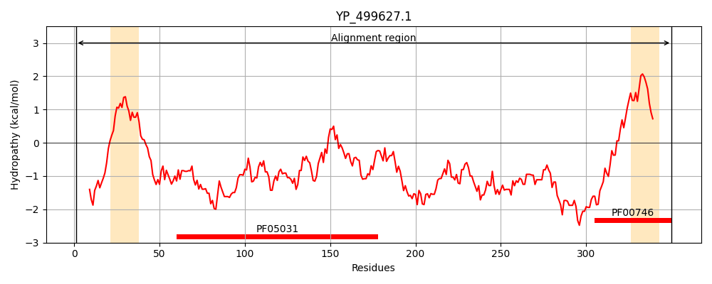
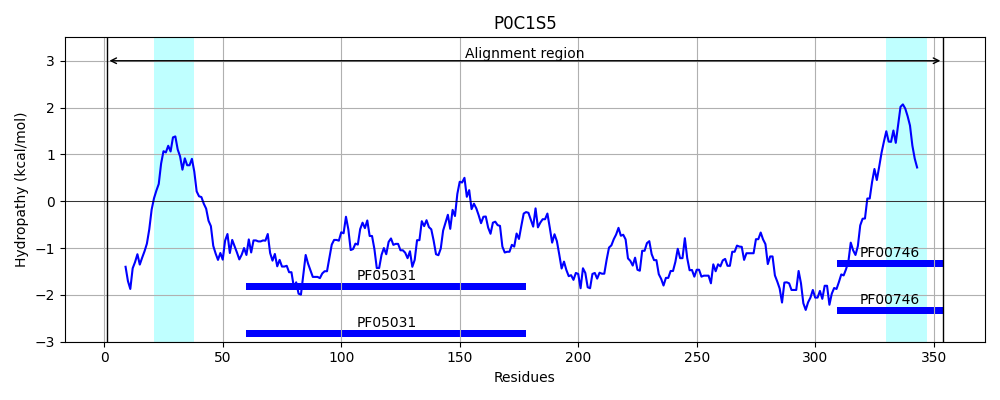
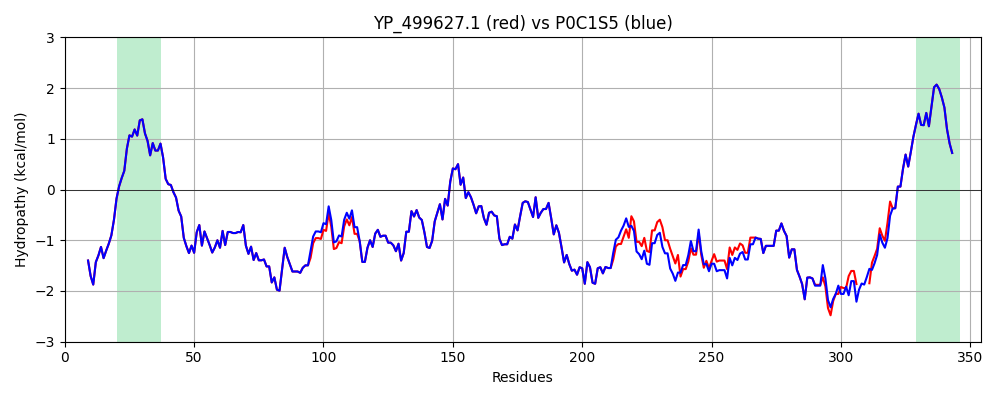

Hit Accession: P0C1S5
Hit TCID: 9.A.39.1.2
Hit Description: gnl|BL_ORD_ID|8890 gnl|TC-DB|P0C1S5|9.A.39.1.2 Iron-regulated surface determinant protein A - Staphylococcus aureus.
Mach Len: 354
e:0.000000
Query TMS Count : 2
Hit TMS Count: 2
TMS-Overlap Score: 1.600000
Predicted Substrates:CHEBI:5651;ferroheme b
BLAST Alignment:
Score: 1645 , Bit scores: 638 bits, E-value: 0.0e+00, Alignment length: 354, Percentage identity: 92
Query: 1 MTKHYLNSKYQSEQRSSAMKKITMGTASIILGSLVYIGADSQQVNAATEATNATNNQSTQVSQATSQPINFQVQKDGSSEKSHMDDYMQHPGKVIKQNNKYYFQTVLNNASFWKEYKFYNANNQELATTVVNDNKKADTRTINVAVEPGYKSLTTKVHIVVPQINYNHRYTTHLEFEKAIPTLADAAKPNNVKPVQPKPAQPKTPTEQTKPVQPKVEKVKPTVTTTSKVEDNHSTKVVSTDTTKDQTKTQTAHTVKTAQTAQEQNKVQTPVKDVATAKSESNNQAVSDNKSQQTNKVTKHNETPKQA----SKAKELPKTGLTSVDNFISTVAFATLALLGSLSLLLFKRKESK 350
MTKHYLNSKYQSEQRSSAMKKITMGTASIILGSLVYIGADSQQVNAATEATNATNNQSTQVSQATSQPINFQVQKDGSSEKSHMDDYMQHPGKVIKQNNKYYFQ VLNNASFWKEYKFYNANNQELATTVVND+KKADTRTINVAVEPGYKSLTTKVHIVVPQINYNHRYTTHLEFEKAIPTLADAAKPNNVKPVQPKPAQPKTPTEQTKPVQPKVEKVKP VT SK E+ +TKVVS++ TKDQ++TQ+A TVKT QTAQ+QNKVQTPVKDVATAKSESNNQAVSDNKSQQTNKVTK NE KQ SKAKELPKTGLTSVDNFISTVAFATLALLGSLSLLLFKRKESK
Sbjct: 1 MTKHYLNSKYQSEQRSSAMKKITMGTASIILGSLVYIGADSQQVNAATEATNATNNQSTQVSQATSQPINFQVQKDGSSEKSHMDDYMQHPGKVIKQNNKYYFQAVLNNASFWKEYKFYNANNQELATTVVNDDKKADTRTINVAVEPGYKSLTTKVHIVVPQINYNHRYTTHLEFEKAIPTLADAAKPNNVKPVQPKPAQPKTPTEQTKPVQPKVEKVKPAVTAPSKNENRQTTKVVSSEATKDQSQTQSARTVKTTQTAQDQNKVQTPVKDVATAKSESNNQAVSDNKSQQTNKVTKQNEVHKQGPSKDSKAKELPKTGLTSVDNFISTVAFATLALLGSLSLLLFKRKESK 354 | Protein Hydropathy Plots: |
|---|
|  |  |
Pairwise Alignment-Hydropathy Plot:
|
|---|
|  |